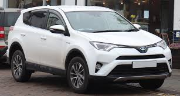

A Toyota RAV4 é um SUV compacto popular conhecido por sua confiabilidade, versatilidade e eficiência. Vou fornecer algumas informações gerais sobre os modelos de 2015 até 2018:
Design e tamanho
A RAV4 tem um design moderno e aerodinâmico, com linhas suaves e uma postura robusta. Em termos de tamanho, é considerado um SUV compacto, oferecendo espaço suficiente para passageiros e carga sem ser excessivamente grande.
Desempenho
Os modelos dessa faixa de anos geralmente vêm com um motor de quatro cilindros e tração dianteira ou integral. Eles são conhecidos por oferecer um equilíbrio decente entre desempenho e eficiência de combustível.
Tecnologia
Dependendo do pacote de acabamento e das opções, a RAV4 pode estar equipada com uma variedade de recursos tecnológicos, como sistema de entretenimento touchscreen, câmera de ré, sistema de navegação, conectividade Bluetooth e muito mais.
Segurança
A Toyota tem uma reputação sólida quando se trata de segurança, e a RAV4 não é exceção. Ela geralmente vem com uma série de recursos de segurança padrão, como controle de estabilidade, controle de tração, freios antibloqueio (ABS), airbags frontais e laterais, além de opções de segurança avançadas, como alerta de colisão frontal, assistente de permanência na faixa e controle de cruzeiro adaptativo.
Comforto e espaço interior
Embora seja um SUV compacto, a RAV4 geralmente oferece um interior confortável e espaçoso o suficiente para acomodar cinco passageiros. O espaço de carga também é decente, com capacidade para bagagens e equipamentos diversos.
